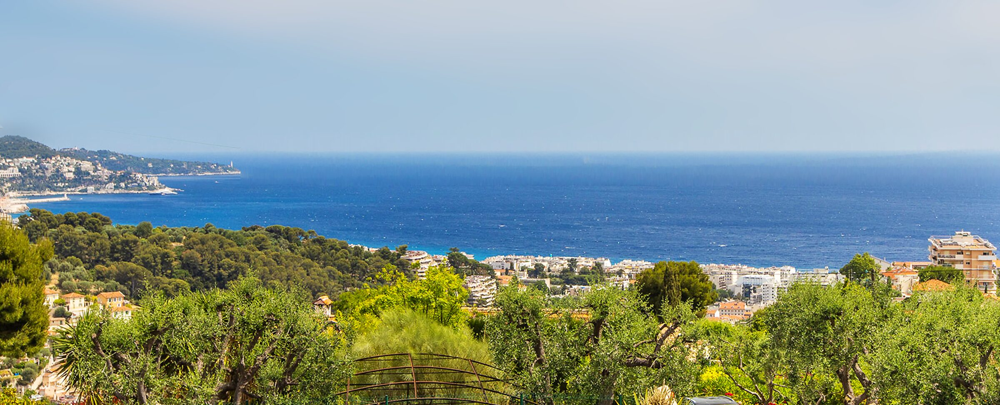
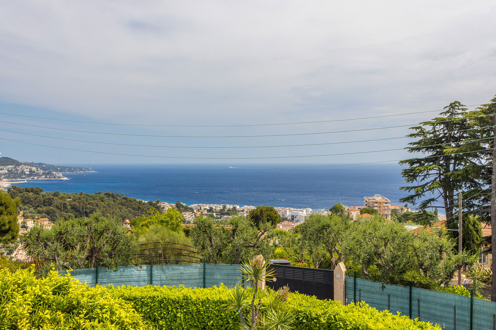
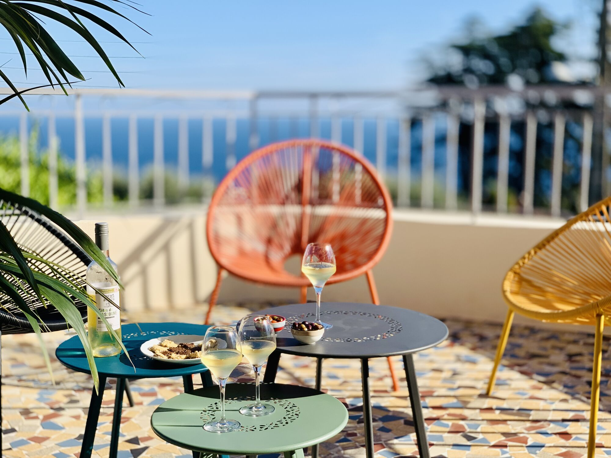
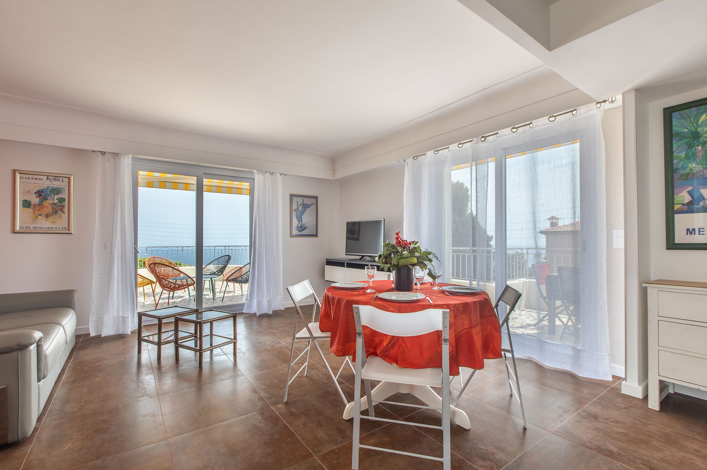
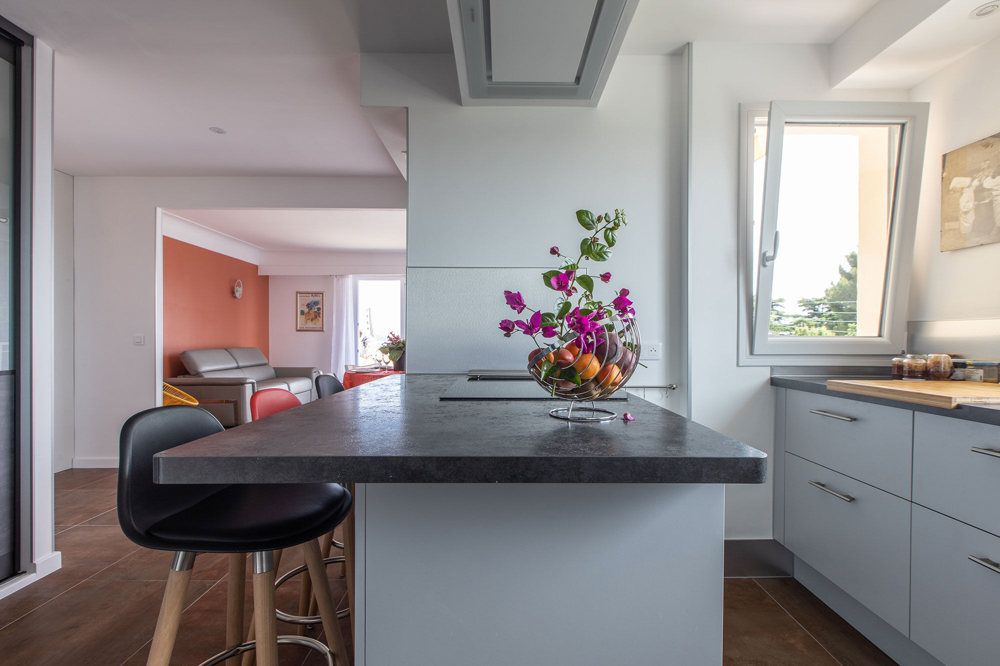
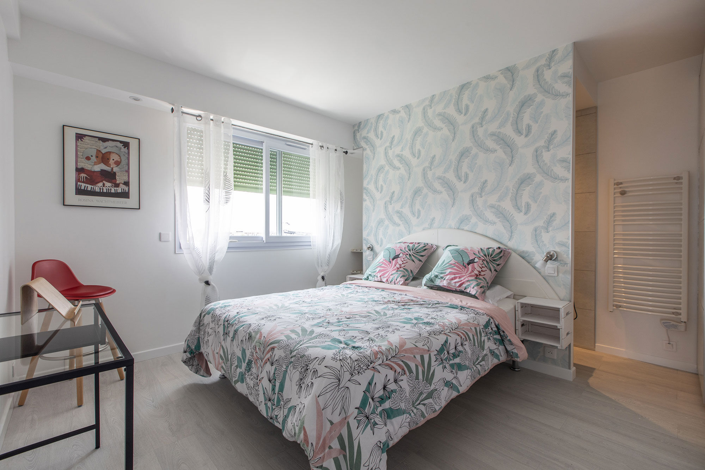
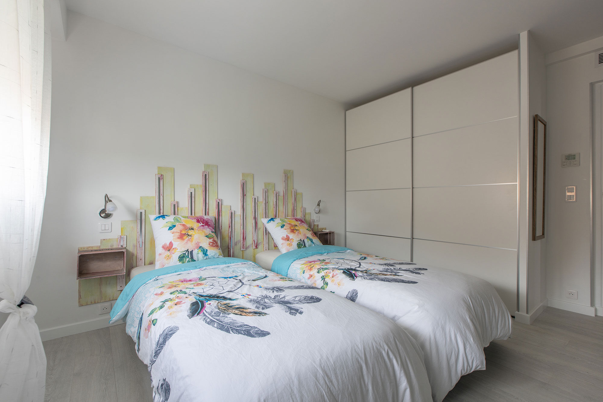
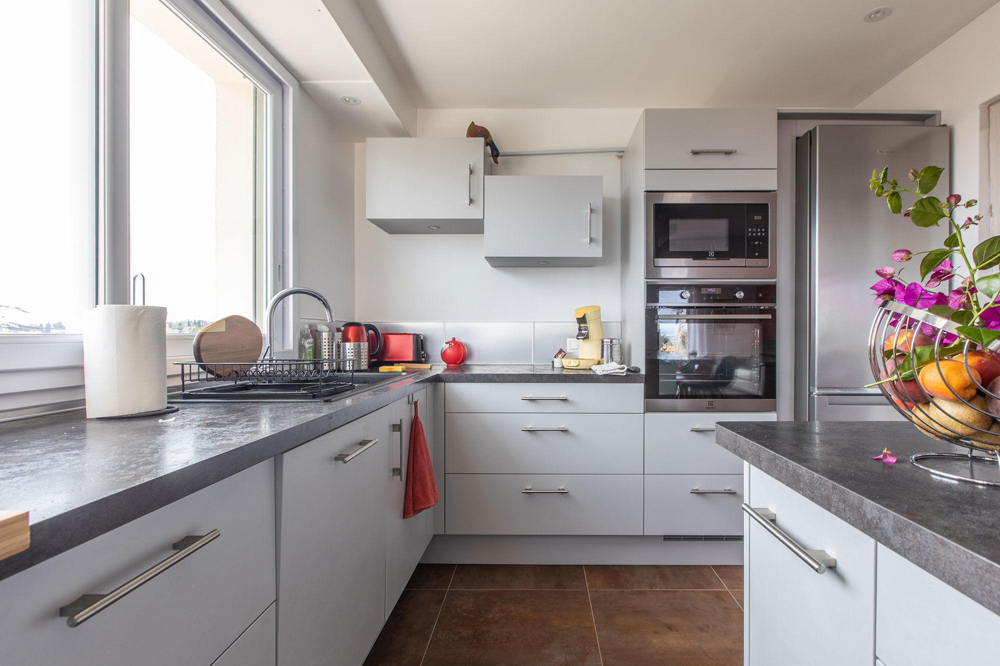
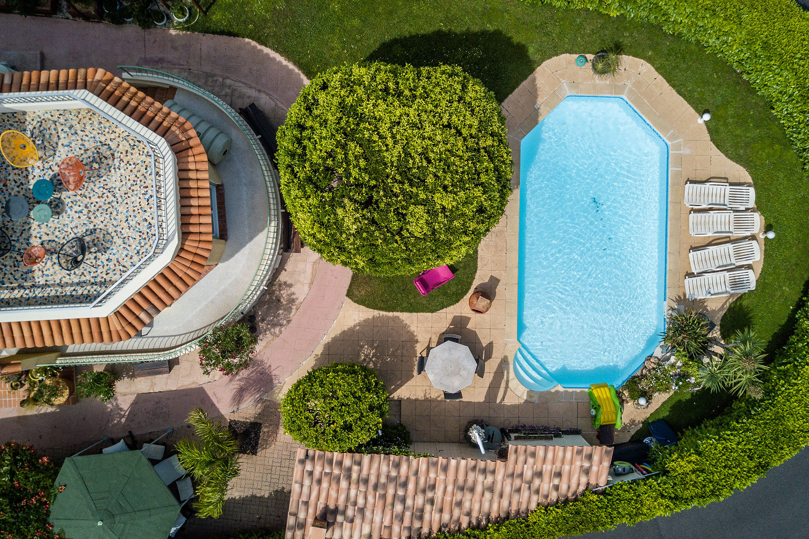
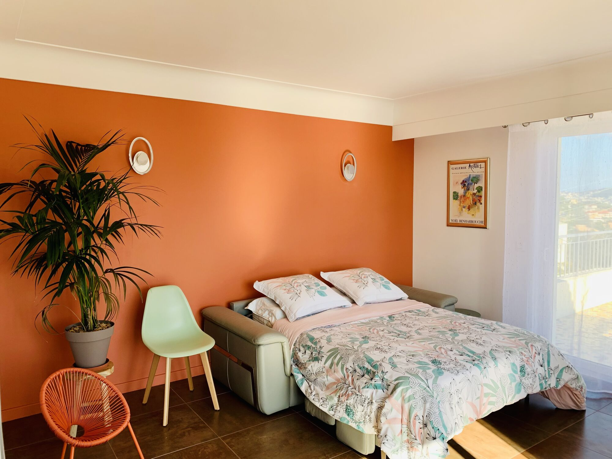

Location en bail mobilité à NiceAu-dessus de la Baie des Anges, un lieu pour penser.
Nice, colline de Bellet. Un appartement meublé en hauteur, face à la mer, loué en bail mobilité de 1 à 10 mois à ceux qui viennent travailler sur la Riviera en mission temporaire ou en mutation, ou qui s'y forment.
Demander une disponibilitéT3 meublé de 77,51 m², premier étage d'une villa. Bail mobilité de 1 à 10 mois.
Une force tranquille
Il y a des lieux que l'on choisit pour leur adresse. Celui-ci, on le choisit pour ce que l'on voit en sortant sur la terrasse.
Au premier étage d'une villa, sur la colline de Bellet, l'appartement regarde toute la Baie des Anges. Le matin, le soleil se lève sur la terrasse. La vue ne bouge pas, et c'est elle qui vous pose : une force tranquille, stable.
Le logement est traversant. La lumière entre des deux côtés, et le soir, le soleil se couche sur les collines. D'une terrasse à l'autre, on voit tout, de la mer jusqu'aux crêtes.
Et les jours de tempête, la mer se couvre de moutons jusqu'à l'horizon. Vous êtes à l'abri, en hauteur, et vous regardez la puissance des éléments comme peu de gens la voient.

La Riviera, terre de travail
Henri Matisse arrive à Nice en décembre 1917. La lumière le retient, pour des années.
En 1924, F. Scott Fitzgerald s'installe à la Villa Marie, à Saint-Raphaël, pour écrire The Great Gatsby.
Cette côte attire depuis longtemps ceux qui ont un travail à mener loin du bruit.
Aujourd'hui, Monaco est à 22 minutes de la colline, Sophia Antipolis à 28, l'aéroport international à 20. Les rendez-vous restent à portée. Le soir, vous remontez sur la colline.

L'appartement, pièce par pièce
Poussez la porte. 77,51 m² au premier étage d'une villa, deux chambres, deux salles d'eau, une pièce de vie ouverte sur la cuisine, et deux terrasses face à la mer.

La pièce de vie
Le salon et la salle à manger s'ouvrent sur la cuisine. C'est là que l'on revient entre deux heures de travail, un café à la main, la mer en face.

La cuisine
Plaque à induction, four, lave-vaisselle, réfrigérateur-congélateur. L'îlot sert de plan de travail le soir, et de table le matin.

La première chambre, 13,91 m²
Avec sa propre salle d'eau et une douche à l'italienne. Une chambre pour dormir vraiment.

La seconde chambre, 12,88 m²
Et votre table de travail, avec la fibre. C'est ici que s'ouvre, enfin, le dossier qui attendait.
Les salles d'eau
Deux salles d'eau, dont une privative avec douche à l'italienne, et un WC indépendant.

La véranda, 4,95 m²
Lave-linge et sèche-linge. Le linge de lit et de toilette est fourni, avec rechange.
Les deux terrasses
À l'est, 10,58 m² pour le lever du soleil. À l'ouest, 15,75 m² pour le soir, avec une table pour six sous le store et une plancha. Entre les deux, toute la baie.

Le jardin, la piscine, le parking
Un jardin, une piscine partagée et une place de parking privée, dans l'enceinte de la villa.

Le confort
Climatisation réversible, pompe à chaleur, fibre. DPE C en énergie, A en climat.


Un mois sur la Riviera
La semaine
Les journées prennent leur rythme. Le matin appartient au travail. À midi, le marché du Cours Saleya, dans le vieux Nice, déborde de fleurs, de fruits et de poisson, du mardi au dimanche.
Le soir, la mer est à 7 minutes. Une socca dans le vieux Nice, ou un dîner sur la terrasse, face à la baie.
Sans voiture, le bus 60 passe à 50 mètres et rejoint le tram.
Autour de Nice
Et quand le dossier est refermé, la côte est à portée : Villefranche-sur-Mer, Saint-Jean-Cap-Ferrat, Èze, à 15 ou 20 minutes de Nice.
Temps indiqués depuis le centre de Nice, hors trafic. Le logement est sur la colline de Bellet, à l'ouest.
Pour ceux dont le travail demande du temps
Dirigeants, fondateurs, chercheurs, professeurs invités, consultants en mission, médecins invités : l'appartement est fait pour ceux qui viennent à Nice pour un travail précis, un mois ou plus, et qui ont besoin d'un lieu à eux pour le mener.
Une table de travail, le calme, la lumière, et la Riviera à portée de rendez-vous.
Tarifs de la location en bail mobilité
3 650 € par mois, charges comprises. Même prix pour toutes les durées, de 1 à 10 mois.
Détail : loyer 3 475 € + forfait de charges 175 € (eau, électricité, climatisation, fibre, parking, piscine partagée).
- Dernier mois offert
- Pour un bail de 10 mois, le dernier mois de loyer est offert. Une fois par bail. Le loyer ne change pas. Le forfait de charges de 175 € reste dû ce mois-là.
- Ce qui est compris
- Linge de lit et de toilette, avec rechange. Charges du forfait (voir plus haut). Une bouteille de vin de Bellet à votre arrivée.
- Ce qui n'est pas compris
- Le ménage. L'assurance habitation, à souscrire par le locataire.
- Conditions
- Durée de 1 à 10 mois. Aucun dépôt de garantie. Préavis d'un mois à la demande du locataire. Remise des clés et état des lieux avec le bailleur.
- Pièces à fournir
- Une pièce d'identité. Un justificatif du motif professionnel ou de formation : ordre de mission, contrat, lettre de l'employeur ou de l'établissement, convention de stage.
Logement loué uniquement en bail mobilité de 1 à 10 mois, à un locataire qui justifie d'un motif professionnel ou de formation (mission temporaire, mutation, formation, études, stage). Il ne se loue ni pour des vacances, ni à la nuit, ni en location touristique.
Le contrat est régi par le droit français et rédigé en français. Les traductions sont fournies à titre d'information.
Ce qu'ils ont écrit de l'appartement
Quelques mots laissés dans le livre d'or par ceux qui y ont vécu avant vous.
« Une vue à couper le souffle, un appartement des plus agréables et d'une propreté irréprochable. »
Mélody, Nancy
« Un appartement au top, moderne, bien équipé, au goût du jour. Qu'il est agréable de s'asseoir sur la terrasse et de contempler la mer et ses bateaux. »
Chantal, Serge, Sabrina et Anthony, Doubs
« L'appartement est très bien situé et d'une propreté irréprochable. La vue est magnifique. »
Anaïs, Nord
« You have the most beautiful view from the flat and everything you need here! »
Famille Traude
Extraits du livre d'or de l'appartement.
Fiche technique
Pour décider avec les chiffres : surfaces, équipements, performance énergétique.
Le logement
- Surface habitable
- 77,51 m² (mesurage loi Boutin, 27/09/2026)
- Terrasses
- 10,58 m² + 15,75 m², Sud-Est et Sud-Ouest
- Véranda buanderie
- 4,95 m²
- Pièces
- 3, dont 2 chambres
- Chambres
- 13,91 m² et 12,88 m²
- Salles d'eau
- 2, dont 1 privative avec douche à l'italienne
- WC
- 1 indépendant
- Situation
- 1er étage d'une villa, logement traversant
- Vue
- Baie des Anges, dégagée
Énergie et confort
- DPE
- C en énergie, A en climat, valable jusqu'au 26/09/2036
- Coût énergie estimé
- 850 à 1 210 € par an, inclus dans le forfait de charges
- Chauffage et climatisation
- Pompe à chaleur, climatisation réversible
- Internet
- Fibre
Équipements
- Cuisine
- Îlot à induction, four, micro-ondes, lave-vaisselle, réfrigérateur-congélateur
- Linge
- Lave-linge, sèche-linge, fer à repasser
- Literie
- Draps, oreillers, couettes d'été et d'hiver, linge de toilette fournis
- Extérieur
- Table à rallonge 6 personnes sous store électrique, plancha
- Stationnement
- 1 place privée dans l'enceinte
- Piscine
- Partagée, selon horaires
- Famille
- Chaise haute, lit parapluie, cache-prises sur demande
Contrat
- Bail
- Bail mobilité, de 1 à 10 mois, signé par la personne logée
- Payeur
- Le locataire, ou son employeur avec une lettre de prise en charge
- Durée minimale
- 1 mois
- Pièces
- Justificatif du motif de mobilité avant signature
- Garantie
- Caution de l'employeur ou caution personnelle. Visale non mobilisable à ce niveau de loyer
- Loyer
- Exonéré de TVA (art. 261 D 4° du CGI). Quittance au nom du locataire, qui mentionne le payeur
- Arrivée
- Remise des clés et état des lieux avec le bailleur
Questions fréquentes
L'essentiel sur le bail, les pièces à fournir et la vie dans le logement.
Qu'est-ce qu'un bail mobilité ?
C'est un bail de location meublée de 1 à 10 mois, créé par la loi ELAN du 23 novembre 2018 (articles 25-12 et suivants de la loi du 6 juillet 1989). Il n'est ni renouvelable ni reconductible, et le propriétaire ne peut pas demander de dépôt de garantie.
Qui peut louer en bail mobilité à Nice ?
Une personne en formation professionnelle, en études supérieures, en apprentissage, en stage, en service civique, en mutation professionnelle ou en mission temporaire. Le justificatif du motif est demandé avant la signature du bail.
Mon employeur peut-il payer le loyer ?
Oui. Quand l'employeur, une agence de relocation ou une production règle le loyer, le bail est signé par la personne logée, avec la lettre de prise en charge du payeur. Le payeur vire le loyer avec la référence du bail, et la quittance au nom du locataire mentionne le payeur.
Que comprend le loyer ?
Le loyer et le forfait de charges (eau, électricité, climatisation, fibre, parking, piscine partagée), et le linge de lit et de toilette fourni avec rechange. Une bouteille de vin de Bellet vous attend à votre arrivée. Le locataire ne reçoit aucune facture d'énergie.
Combien coûte le bail mobilité ?
3 650 € par mois, charges comprises, pour toutes les durées : loyer de 3 475 € et forfait de charges de 175 €. Pour un bail de 10 mois, le dernier mois de loyer est offert. Cette remise est accordée une seule fois, par bail, et ne modifie pas le loyer du bail.
La garantie Visale est-elle acceptée ?
Visale n'est pas mobilisable à ce niveau de loyer. La garantie prend la forme d'une caution de l'employeur ou d'une caution personnelle.
Le logement se loue-t-il pour des vacances ?
Non. Logement loué uniquement en bail mobilité de 1 à 10 mois, à un locataire qui justifie d'un motif professionnel ou de formation (mission temporaire, mutation, formation, études, stage). Il ne se loue ni pour des vacances, ni à la nuit, ni en location touristique.
Peut-on louer un appartement à Nice pour 3 mois ?
Oui. Le bail mobilité se signe pour une durée de 1 à 10 mois, donc pour 3 mois. L'appartement se loue meublé et équipé, 3 650 € par mois charges comprises (dont 175 € de forfait de charges, sans régularisation), à un locataire en mission temporaire, en mutation professionnelle ou en formation.
Le bail mobilité s'applique-t-il dans les Alpes-Maritimes ?
Oui. Le bail mobilité est prévu par la loi du 6 juillet 1989 (articles 25-12 à 25-18) et se signe à Nice comme dans le reste des Alpes-Maritimes. L'appartement se trouve à Nice, sur la colline de Bellet.
Peut-on habiter à Nice pour une mission à Monaco ou à Sophia Antipolis ?
Oui, si vous êtes en mission temporaire ou en mutation professionnelle, ou en formation, et que vous pouvez le justifier (ordre de mission, avenant ou attestation de votre employeur indiquant le motif et la durée). Depuis l'appartement, Monaco est à 22 minutes en voiture, Sophia Antipolis à 28 minutes et l'aéroport Nice Côte d'Azur à 20 minutes, hors trafic.
Peut-on louer moins d'un mois ?
Non. La durée minimale est d'un mois.
Puis-je louer pour un mois si je suis dirigeant ou indépendant ?
Oui, si votre venue répond à un motif professionnel que vous pouvez justifier : mission, projet, formation. Le bail mobilité exige ce justificatif. Le logement ne se loue pas sans motif.
Puis-je travailler dans le logement ?
Oui. La seconde chambre porte un poste de travail, et la fibre est installée. La pièce de vie et la terrasse offrent d'autres endroits où s'installer.
Que se passe-t-il à la fin du bail ?
Le bail mobilité ne se renouvelle pas. Sa durée peut être modifiée une seule fois par avenant, dans la limite de 10 mois au total. Le locataire peut partir à tout moment avec un préavis d'un mois. Les clés se rendent avec le bailleur, lors de l'état des lieux de sortie.
Parlez-nous de votre mission
Dites-nous ce qui vous amène à Nice, et à quelles dates. Nous vous répondons avec les disponibilités.
Ou directement : contact@lespiafsdescollines.com · +33 (0)6 11 94 82 35